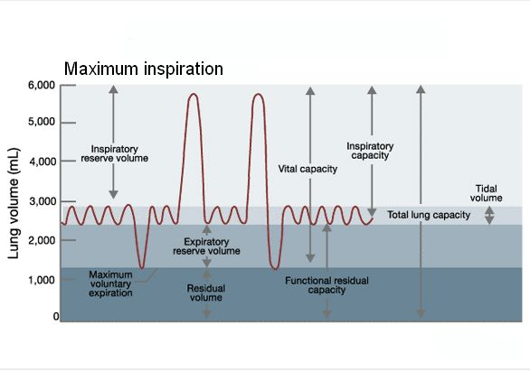

ปริมาตรของปอดแบ่งเป็น 4 ส่วนคือ
1)Tidal volume (TV) คือปริมาตรของอากาศในการหายใจเข้าหรือหายใจออกในครั้งหนึ่งๆ ในผู้ใหญ่จะมีค่าปกติประมาณ 500 ml
2) Inspiratory reserve volume (IRV) คือปริมาตรของอากาศที่สามารถหายใจเข้าเพิ่มได้อีกจนเต็มที่ต่อจากการหายใจ เข้าตามปกติ มีค่าประมาณ 3,300 ml
3) Expiratory reserve volume (ERV) คือปริมาตรของอากาศที่สามารถหายใจออกได้อีกจนเต็มที่ต่อจากการหายใจออก ตามปกติ มีค่าประมาณ 1,000 ml
4. Residual volume (RV) คือปริมาตรของอากาศที่ยังคงเหลือค้างอยู่ในปอด หลังจากการหายใจออกอย่างเต็มที่ มี ค่าประมาณ 1,200 ml
ความจุของปอดแบ่งเป็น 4 ส่วนคือ
1) Inspiratory capacity (IC) คือความจุของปอดที่คิดเป็นปริมาตรของอากาศที่หายใจเข้าไปได้เต็มที่หลังจากหายใจออก ตามปกติ หรือเป็นผลรวมของ TV + IRV ปกติมีค่าประมาณ 3,800 ml
2) Functional residual capacity (FRC) คือความจุปอดที่คิดเป็นปริมาตรของอากาศคงเหลืออยู่ในปอดหลังจากหายใจ ออกตามปกติ หรือเป็นผลรวมของ ERV + RV ปกติมีค่าประมาณ 2,200 ml
3) Vital capacity (VC) คือความจุของปอดที่คิดเป็นปริมาตรของอากาศหายใจออกเต็มที่หลังจากการหายใจเข้าเต็มที่ หรือ เป็นผลรวมของ IRV + TV + ERV ปกติมีค่าประมาณ 4,800 ml
4) Total lung capacity (TLC) คือความจุของปอดที่คิดเป็นปริมาตรของอากาศทั้งหมดเมื่อหายใจเข้าเต็มที่ หรือเป็น ผลรวมของ VC + RV ปกติมีค่าประมาณ 6,000 ml  |